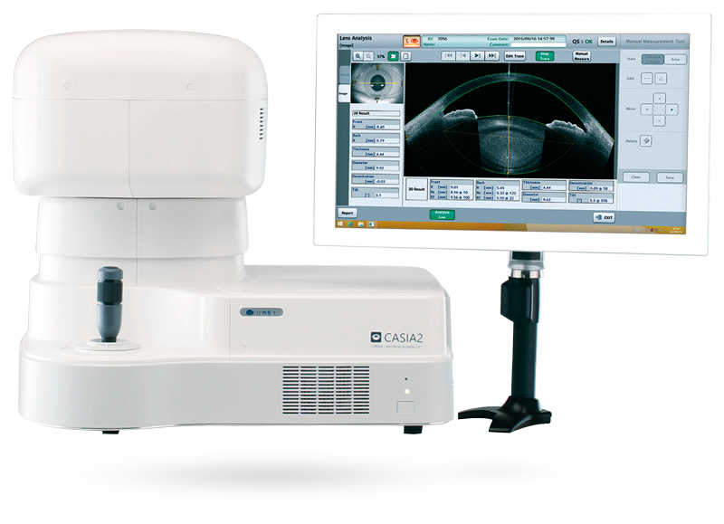

Freedom Distribution Tunisia · Africa
L’innovation médicale
au service de la vision.
Nous accompagnons les professionnels de santé avec des équipements, implants et technologies ophtalmologiques de précision.
MEDICAL TECHNOLOGYPrecision
in every detail
in every detail
Faire défiler
Partenaires internationaux
Des technologies issues de fabricants de référence.
APPASSAMYCRISTALENSGEUDERI-OPTIKLUMENISMANIOPTOPOLRAYNERSBMTAKAGITOMEYMEDIWORKSPLENOPTIKASURGICUTAPPASSAMYCRISTALENSGEUDERI-OPTIKLUMENISMANIOPTOPOLRAYNERSBMTAKAGITOMEY
Freedom Distribution
Une expertise dédiée à l’excellence ophtalmologique.
Freedom Distribution est une entreprise privée spécialisée dans la distribution d’équipements, d’implants et d’accessoires ophtalmiques, ainsi que de technologies médicales innovantes en Tunisie et en Afrique.
Notre équipe accompagne ses partenaires avec une sélection exigeante de solutions, un savoir-faire technique et un service de proximité.
En savoir plus →Nos expertises
Des solutions pour chaque étape du parcours ophtalmologique.
01Implants
Implants
intraoculaires
Solutions implantables sélectionnées pour la chirurgie de la cataracte.
Explorer →02Exploration &
Exploration &
diagnostic
Imagerie, mesure et analyse pour une décision clinique éclairée.
Explorer →
03
Chirurgie
Instruments et solutions de précision pour le bloc opératoire.
Explorer →
04
Dry Eye
Technologies innovantes dédiées à la prise en charge de l’œil sec.
Explorer →
Catalogue sélectionné
Nos solutions phares.
CASIA 2
Demander un devis ↗
REVO FC130
Demander un devis ↗
Activa
Demander un devis ↗
Implantologie ophtalmique
Des solutions conçues pour la précision.
Un portefeuille couvrant les implants PMMA, 3 pièces, Iris Claw, hydrophiles et hydrophobes, avec les technologies de fabricants spécialisés.
- Freedom · Rayner · Cristalens · Appassamy
- Solutions pour les besoins chirurgicaux ciblés
- Documentation et accompagnement sur demande
Au-delà du produit
Plus qu’un distributeur.
Un partenaire technologique.
Conseil
Orientation vers la solution adaptée à vos besoins.
Installation
Mise en service et prise en main de vos équipements.
Formation
Accompagnement des équipes utilisatrices.
Support technique
Un interlocuteur disponible à chaque étape.
Échangeons
Un projet, une question,
un besoin spécifique ?
Notre équipe est à votre écoute pour vous accompagner.
+216 73 226 630contact@ophtalmiques.com